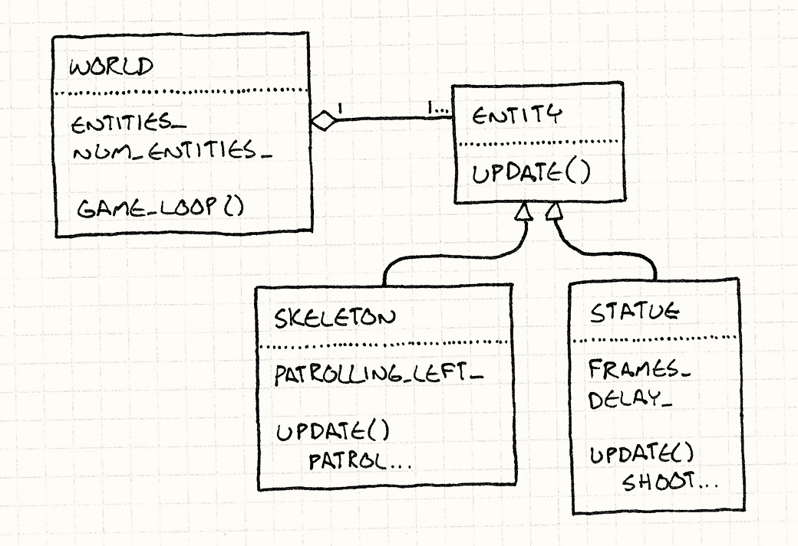

Update Method
Game Programming PatternsSequencing Patterns
Intent
意图
Simulate a collection of independent objects by telling each to process one frame of behavior at a time.
通过每次处理一帧的行为模拟一系列独立对象。
Motivation
动机
The player’s mighty valkyrie is on a quest to steal glorious jewels from where they rest on the bones of the long-dead sorcerer-king. She tentatively approaches the entrance of his magnificent crypt and is attacked by… nothing. No cursed statues shooting lightning at her. No undead warriors patrolling the entrance. She just walks right in and grabs the loot. Game over. You win.
玩家控制强壮的瓦尔基里正在从死亡巫王的栖骨之处偷走华丽珠宝的考验中。它尝试接近他华丽的地宫门口，然后遭到了……没有东西。没有诅咒雕像向她射击，没有不死战士巡逻入口。她直接走进去然后拿走了珠宝。游戏结束。你赢了。
Well, that won’t do.
好吧，这可不行。
This crypt needs some guards — enemies our brave heroine can grapple with. First up, we want a re-animated skeleton warrior to patrol back and forth in front of the door. If you ignore everything you probably already know about game programming, the simplest possible code to make that skeleton lurch back and forth is something like:
地宫需要守卫——我们勇敢的英雄可以战斗的敌人。首先，我们需要一个骷髅战士在门口前后移动巡逻。如果你忽视了你已知的关于游戏编程的任何事情，最简单的实现代码让骷髅蹒跚着来回移动大概是这样的：
while (true) { // Patrol right. for (double x = 0; x < 100; x++) { skeleton.setX(x); } // Patrol left. for (double x = 100; x > 0; x--) { skeleton.setX(x); } }
The problem here, of course, is that the skeleton moves back and forth, but the player never sees it. The program is locked in an infinite loop, which is not exactly a fun gameplay experience. What we actually want is for the skeleton to move one step each frame.
这里的问题，当然，是骷髅来回打转，但是玩家永远看不到。玩家被锁死在一个无限循环，那不是一个有趣的游戏体验。我们事实上想要的是骷髅每帧移动一步。
We’ll have to remove those loops and rely on the outer game loop for iteration. That ensures the game keeps responding to user input and rendering while the guard is making his rounds. Like:
我们得移除这些循环，依赖外层循环来遍历。这保证了游戏在卫士来回时能回应玩家的输入和渲染。
Entity skeleton; bool patrollingLeft = false; double x = 0; // Main game loop: while (true) { if (patrollingLeft) { x--; if (x == 0) patrollingLeft = false; } else { x++; if (x == 100) patrollingLeft = true; } skeleton.setX(x); // Handle user input and render game... }
I did the before/after here to show you how the code gets more complex.
Patrolling left and right used to be two simple for loops. It kept track of
which direction the skeleton was moving implicitly by which loop was executing.
Now that we have to yield to the outer game loop each frame and then resume
where we left off, we have to track the direction explicitly using that
patrollingLeft variable.
我在这里之前/之后的做的事展示了代码是如何变得复杂的。左右巡逻需要两个简单的for循环。这通过那个循环在执行显式追踪了骷髅在移向哪个方向。现在我们每帧继续为目的外层游戏循环，然后继续我们所做的，我们就使用了patrollingLeft显式地追踪了方向。
But this more or less works, so we keep going. A brainless bag of bones doesn’t give yon Norse maiden too much of a challenge, so the next thing we add is a couple of enchanted statues. These will fire bolts of lightning at her every so often to keep her on her toes.
但这或多或少的有效，所以我们继续。一个无脑的骨头袋不会给你的挪威少女太多挑战，所以我们添加的下一个是一些魔法雕像。它们一直会向她发射闪电这样让她经常移动。
Continuing our, “what’s the simplest way to code this” style, we end up with:
继续我们的“使用最简单的方式编码”的风格，我们得到了：
// Skeleton variables... Entity leftStatue; Entity rightStatue; int leftStatueFrames = 0; int rightStatueFrames = 0; // Main game loop: while (true) { // Skeleton code... if (++leftStatueFrames == 90) { leftStatueFrames = 0; leftStatue.shootLightning(); } if (++rightStatueFrames == 80) { rightStatueFrames = 0; rightStatue.shootLightning(); } // Handle user input and render game... }
You can tell this isn’t trending towards code we’d enjoy maintaining. We’ve got an increasingly large pile of variables and imperative code all stuffed in the game loop, each handling one specific entity in the game. To get them all up and running at the same time, we’ve mushed their code together.
你可以发现这不像是我们能控制的代码了。我们得到了不断增长的变量数目，必要的代码都在游戏循环中，每一个都处理一个特别的游戏实体。为了一起得到他们然后一起运行，我们将他们的代码混杂在了一起。
The pattern we’ll use to fix this is so simple you probably have it in mind already: each entity in the game should encapsulate its own behavior. This will keep the game loop uncluttered and make it easy to add and remove entities.
我们用了修复这个的模式非常简单，你也许已经知道了：每个游戏实体应该封装它自己的行为。这会保持游戏循环整洁而容易的添加和移除实体。
To do this, we need an abstraction layer, and we create that by defining an
abstract update() method. The game loop maintains a collection of objects, but
it doesn’t know their concrete types. All it knows is that they can be updated.
This separates each object’s behavior both from the game loop and from the other
objects.
为了到达这一点，我们需要一个抽象层，我们通过定义一个抽象update()方法来完成。游戏循环管理一系列对象，但是不知道他们实际的类型。它只知道他们可以被更新。浙江每个对象的行为和游戏循环，和其他对象分离开来。
Once per frame, the game loop walks the collection and calls update() on each
object. This gives each one a chance to perform one frame’s worth of behavior.
By calling it on all objects every frame, they all behave simultaneously.
每一帧，游戏循环遍历集合，在每个对象上调用update()。这给了我们一个机会在每一帧上使用行为。通过在所有对象上每一帧调用它，他们同时行动。
The game loop has a dynamic collection of objects, so adding and removing them from the level is easy — just add and remove them from the collection. Nothing is hardcoded anymore, and we can even populate the level using some kind of data file, which is exactly what our level designers want.
游戏循环有一个动态的对象集合，所以从关卡添加和移除是很容易的——只需要将他们从集合中添加和移除。没有什么硬编码了，我们仍然可以用一些数据文件构成这个关卡，那就是我们关卡设计者需要的。
The Pattern
模式
The game world maintains a collection of objects. Each object implements an update method that simulates one frame of the object’s behavior. Each frame, the game updates every object in the collection.
游戏世界管理一系列对象。每个对象实现一个更新方法模拟对象一帧的行为。每一帧，游戏更新集合中的每一个对象。
When to Use It
何时使用
If the Game Loop pattern is the best thing since sliced bread, then the Update Method pattern is its butter. A wide swath of games featuring live entities that the player interacts with use this pattern in some form or other. If the game has space marines, dragons, Martians, ghosts, or athletes, there’s a good chance it uses this pattern.
如果一个游戏循环模式是切片面包，那么更新方法模式就是他的奶油。玩家交换的很多游戏活动实体都用这样或那样的方式实现了这个模式。如果游戏有太卡陆战队，火龙，火星人，鬼魂或者运动员，很有可能它使用了这个模式。
However, if the game is more abstract and the moving pieces are less like living actors and more like pieces on a chessboard, this pattern is often a poor fit. In a game like chess, you don’t need to simulate all of the pieces concurrently, and you probably don’t need to tell the pawns to update themselves every frame.
但是游戏如果更加抽象，移动部分不太像活动的角色而更加像棋盘，这个模式通常是一个糟糕的选择。在一个像棋类的游戏，你不需要同时模拟所有的部分，你可能也不需要跳起每帧都更新他们自己。
Update methods work well when:
更新方法适应以下情况：
-
Your game has a number of objects or systems that need to run simultaneously.
-
你的游戏有很多对象或系统需要同时运行。
-
Each object’s behavior is mostly independent of the others.
-
每个对象的行为都与其他的大部分独立。
-
The objects need to be simulated over time.
-
对象需要随时间模拟。
Keep in Mind
记住
This pattern is pretty simple, so there aren’t a lot of hidden surprises in its dark corners. Still, every line of code has its ramifications.
这个模式很简单，所以没有太多黑暗角落。但是每行代码还是有分叉。
Splitting code into single frame slices makes it more complex
将代码分割成一帧的片让它更加复杂
When you compare the first two chunks of code, the second is a good bit more complex. Both simply make the skeleton guard walk back and forth, but the second one does this while yielding control to the game loop each frame.
当你比较前面两块代码的时候，第二块看上去更加复杂。两者都简单的让骷髅守卫来回移动，但是第二个做的同时将每帧控制权交给了游戏循环。
That change is almost always necessary to handle user input, rendering, and the other stuff that the game loop takes care of, so the first example wasn’t very practical. But it’s worth keeping in mind that there’s a big up front complexity cost when you julienne your behavioral code like this.
这个改变几乎总是需要处理用户输入，渲染和其他游戏循环需要注意的事项，所以第一个例子不是太实用。但是很有必要记住在将你的行为切片时会像这样增加很高的复杂性。
You have to store state to resume where you left off each frame
当你离开每一帧的时候，你需要存储状态来继续。
In the first code sample, we didn’t have any variables to indicate whether the guard was moving left or right. That was implicit based on which code was currently executing.
在第一个代码的例子中，我们不需要用任何变量表面守卫在向左还是向右移动。这显式的依赖于哪块代码正在运行。
When we changed this to a one-frame-at-a-time form, we had to create a
patrollingLeft variable to track that. When we return out of the code, the
execution position is lost, so we need to explicitly store enough information to
restore it on the next frame.
当我们将其变为一次一帧的形式，我们需要创建一个patrollingLeft变量来追踪那个。但我从代码中返回时，执行位置就丢失了，所以我们需要显式存储足够的信息为了下帧恢复。
The State pattern can often help here. Part of the reason state machines are common in games is because (like their name implies) they store the kind of state that you need to pick up where you left off.
状态模式通常可以帮助解决这里。状态机在游戏中频繁的原因的一部分时（就像他们名字暗示的）在你离开的时候，他们为你存储你需要的各种状态。
Objects all simulate each frame but are not truly concurrent
对象都模拟每一帧但不是真的同步的
In this pattern, the game loops over a collection of objects and updates each
one. Inside the update() call, most objects are able to reach out and touch
the rest of the game world, including other objects that are being updated. This
means the order in which the objects are updated is significant.
在这个模式中，游戏循环了一堆对象，更新每一个。在update()调用中，大多数对象都能够接触到游戏世界的其他部分，包括按下正在被更新的。这就意味着你更新对象的顺序至关重要。
If A comes before B in the list of objects, then when A updates, it will see B’s previous state. But when B updates, it will see A’s new state, since A has already been updated this frame. Even though from the player’s perspective, everything is moving at the same time, the core of the game is still turn-based. It’s just that a complete “turn” is only one frame long.
如果对象列表中，A在B之前，难免当A更新的时候，它会看到B之前的状态。但是当B更新时，由于A已经在这帧更新了，它会看见A的新状态。哪怕从玩家角度，所有对象都是同时移动的，游戏的核心还是基于回合的。只是一个完整的“回合”只有一帧那么长。
This is mostly a good thing as far as the game logic is concerned. Updating objects in parallel leads you to some unpleasant semantic corners. Imagine a game of chess where black and white moved at the same time. They both try to make a move that places a piece in the same currently empty square. How should this be resolved?
当关注游戏逻辑时，这通常是好事情。平行更新游戏带你到一些不愉快的语义角落。想象国际象棋如果黑白同时移动会发生什么。他们都试图同时往现在的空格子中放置棋子。这怎么解决？
Updating sequentially solves this — each update incrementally changes the world from one valid state to the next with no period of time where things are ambiguous and need to be reconciled.
序列更新解决了这一点——每一次更新让游戏世界从一个合法状态增量更新到下一个，没有引起歧义而需要协调的部分。
Be careful modifying the object list while updating
在更新时小心修改对象列表
When you’re using this pattern, a lot of the game’s behavior ends up nestled in these update methods. That often includes code that adds or removes updatable objects from the game.
当你使用这个模式的时候，很多游戏行为在他们的更新方法中纠缠子啊一起。这通常包括增加和删除可更新对象。
For example, say a skeleton guard drops an item when slain. With a new object, you can usually add it to the end of the list without too much trouble. You’ll keep iterating over that list and eventually get to the new one at the end and update it too.
就开了张，假设骷髅守卫在被杀死的时候掉落东西。使用一个新对象，你通常可以将其增加到列表尾部不引起任何问题。你会继续遍历这张链表，最终盗了新的那个然后也更新了它。
But that does mean that the new object gets a chance to act during the frame that it was spawned, before the player has even had a chance to see it. If you don’t want that to happen, one simple fix is to cache the number of objects in the list at the beginning of the update loop and only update that many before stopping:
但是这表明新对象在它生产的那一帧就有机会活动，甚至在玩家看到它之前。如果你不想发生那种情况，一个简单的修复方法就是在游戏循环中缓存列表对象的数目然后在停止前只更新那么多。
int numObjectsThisTurn = numObjects_; for (int i = 0; i < numObjectsThisTurn; i++) { objects_[i]->update(); }
Here, objects_ is an array of the updatable objects in the game, and
numObjects_ is its length. When new objects are added, it gets incremented. We
cache the length in numObjectsThisTurn at the beginning of the loop so that
the iteration stops before we get to any new objects added during the current
frame.
这儿，objects_是一数组游戏中的可更新对象，而numObjects_是它的长度。当新对象添加时，它增加。我们在循环的开头在numObjectsThisTurn缓存它的长度，这样在更新帧时添加任何新对象后，循环会停在之前的位置。
A hairier problem is when objects are removed while iterating. You vanquish some foul beast and now it needs to get yanked out of the object list. If it happens to be before the current object you’re updating in the list, you can accidentally skip an object:
一个更麻烦的问题是当对象在遍历时移除。你击败了一些邪恶的野兽，现在它需要移出对象列表。如果它正好是你更新状态对象之前的对象，你会意外的跳过一个对象：
for (int i = 0; i < numObjects_; i++) { objects_[i]->update(); }
This simple loop increments the index of the object being updated each iteration. The left side of the illustration below shows what the array looks like while we’re updating the heroine:
这个简单的循环每一次迭代都添加一个对象。下面插图的左侧展示了在我们更新英雄的时候数组看上去是什么样的：

Since we’re updating her, i is 1. She slays the foul beast so it gets removed
from the array. The heroine shifts up to 0, and the hapless peasant shifts up to
1. After updating the heroine, i is incremented to 2. As you can see on the
right, the hapless peasant is skipped over and
never gets updated.
由于我们在更新她，i是1。邪恶野兽被她杀了，因此需要从数组移除。英雄移到了位置0，倒霉的乡下人移到了1。在更新英雄之后，i增加到了2,。就像你在右边看到的，倒霉的乡下人被跳过了，没有被更新。
One fix is to just be careful when you remove objects and update any iteration variables to take the removal into account. Another is to defer removals until you’re done walking the list. Mark the object as “dead”, but leave it in place. During updating, make sure to skip any dead objects. Then, when that’s done, walk the list again to remove the corpses.
一个结局方案是在考虑移除对象和需要被移除物的迭代变量。另一个是在遍历完列表后在移除。将对象标标为“死亡”，但是把它放在那里。在更新时跳过任何死亡的对象。然后，在完成时，在此遍历列表删除尸体。
Sample Code
实例代码。
This pattern is so straightforward that the sample code almost belabors the point. That doesn’t mean the pattern isn’t useful. It’s useful in part because it’s simple: it’s a clean solution to a problem without a lot of ornamentation.
这个模式太直观了，代码几乎只是在重新讨论要点。这不意味着模式不有用。它因为简单而有用：这是一个无需装饰的干净解决方案。
But to keep things concrete, let’s walk through a basic implementation.
We’ll start with an Entity class that will represent the skeletons and statues:
但是为了让事情具体，让我回顾一些基础的实现。我们会代表骷髅和雕像的Entity类开始：
class Entity { public: Entity() : x_(0), y_(0) {} virtual ~Entity() {} virtual void update() = 0; double x() const { return x_; } double y() const { return y_; } void setX(double x) { x_ = x; } void setY(double y) { y_ = y; } private: double x_; double y_; };
I stuck a few things in there, but just the bare minimum we’ll need later.
Presumably in real code, there’d be lots of other stuff like graphics and
physics. The important bit for this pattern is that it has an abstract
update() method.
我在这里塞了一些东西，但是还是几乎我们等会需要的最少量。可以推断在真实代码中，这会有很多其他东西比如图形和物理。这个模式重要的部分是它有一个抽象的update()方法。
The game maintains a collection of these entities. In our sample, we’ll put that in a class representing the game world:
游戏管理一系列实体。在我们的示例中，我会把它放在一个代表游戏世界的类中。
class World { public: World() : numEntities_(0) {} void gameLoop(); private: Entity* entities_[MAX_ENTITIES]; int numEntities_; };
Now that everything is set up, the game implements the pattern by updating each entity every frame:
现在，所有都设好了，游戏通过每帧更新每个实体来实现模式。
void World::gameLoop() { while (true) { // Handle user input... // Update each entity. for (int i = 0; i < numEntities_; i++) { entities_[i]->update(); } // Physics and rendering... } }
Subclassing entities?!
子类化实体？！
There are some readers whose skin is crawling right now because I’m using
inheritance on the main Entity class to define different behaviors. If you don’t
happen to see the problem, I’ll provide some context.
这里有很多读者刚刚起了鸡皮疙瘩，以为我在主要的Entity类中使用了继承来定义不同的行为。如果你在这里没有看出问题，我会提供一些线索。
When the game industry emerged from the primordial seas of 6502 assembly code and VBLANKs onto the shores of object-oriented languages, developers went into a software architecture fad frenzy. One of the biggest was using inheritance. Towering, Byzantine class hierarchies were built, big enough to blot out the sun.
当游戏工业从原始的6502汇编代码和和VBLANKs的原始海洋中浮现，转换为面向对象的于洋，开发者陷入了软件架构的时尚狂热。其中之一就是使用继承。高耸的拜占庭式对象层次被建立了，足够遮挡住太阳。
It turns out that was a terrible idea and no one can maintain a giant class hierarchy without it crumbling around them. Even the Gang of Four knew this in 1994 when they wrote:
这证明是一个糟糕的主要，没人可以不打破他们来管理一个巨大的对象层次。哪怕GoF在1994都知道这一点，写下了：
Favor ‘object composition’ over ‘class inheritance’.
多用“对象组合”，而非“类继承”。
When this realization percolated through the game industry, the solution that
emerged was the Component pattern.
Using that, update() would be on the entity’s components and not on Entity
itself. That lets you avoid creating complicated class hierarchies of entities
to define and reuse behavior. Instead, you just mix and match components.
当这种认知渗透了游戏工业，解决发难是使用组件模式。使用它，update()是实体的组件而不是在Entity中。这让你回避了创建实体的复杂类继承层次并重用行为。相反，你只需混合和组装组件。
If I were making a real game, I’d probably do that too. But this chapter isn’t about components. It’s about update()
methods, and the simplest way I can show them, with as few moving parts as
possible, is by putting that method right on Entity and making a few
subclasses.
如果我在做真实的游戏，我也许会按摩做，但是这一章不是关于组件的。而是关于update()方法，我展示他们的最简单的方法，使用尽可能少的部分，就是把方法放在Entity中然后创建一些子类。
Defining entities
定义实体
OK, back to the task at hand. Our original motivation was to be able to define a
patrolling skeleton guard and some lightning-bolt-unleashing magical statues.
Let’s start with our bony friend. To define his patrolling behavior, we make a
new entity that implements update() appropriately:
好了，回到手头的任务。我们原先的动机是能够定义一个巡逻的骷髅守卫和释放闪电的魔法雕像。让我们从我们的骨头朋友开始。为了定义它的巡逻行为，我们定义一个新的实体恰当地实现了update()：
class Skeleton : public Entity { public: Skeleton() : patrollingLeft_(false) {} virtual void update() { if (patrollingLeft_) { setX(x() - 1); if (x() == 0) patrollingLeft_ = false; } else { setX(x() + 1); if (x() == 100) patrollingLeft_ = true; } } private: bool patrollingLeft_; };
As you can see, we pretty much just cut that chunk of code from the game loop
earlier in the chapter and pasted it into Skeleton’s update() method.
The one minor difference is that patrollingLeft_ has been made into a field
instead of a local variable. That way, its value sticks around between calls to
update().
就像你看到的那样，我们几乎就是从早先的游戏循环中剪切了代码然后粘贴到Skeleton的update()方法中。唯一的小小不同是patrollingLeft_没定义为字段而不是本地变量。通过这种发那个还是，它的值在对update()间保持不变。
Let’s do this again with the statue:
让我们通过对象重新做一遍：
class Statue : public Entity { public: Statue(int delay) : frames_(0), delay_(delay) {} virtual void update() { if (++frames_ == delay_) { shootLightning(); // Reset the timer. frames_ = 0; } } private: int frames_; int delay_; void shootLightning() { // Shoot the lightning... } };
Again, most of the change is moving code from the game loop into the class and renaming some stuff. In this case, though, we’ve actually made the codebase simpler. In the original nasty imperative code, there were separate local variables for each statue’s frame counter and rate of fire.
又一次，大部分改动是将代码从游戏循环移动到类中然后重命名一些东西。但是，在这个例子中，我们真的让代码库变简单了。在原先讨厌的命令式代码中，有分散的本地变量存储每个雕像帧计数器和开火的速率。
Now that those have been moved into the Statue class itself, you can create as
many as you want and each instance will have its own little timer. That’s really
the motivation behind this pattern — it’s now much easier to add new entities to
the game world because each one brings along everything it needs to take care of
itself.
现在那些都被移动到了Statue类中，你可以想创建多少就创建多少，每一个实例都有它自己的小计时器。这是这章别后的真实动机——现在为游戏世界增加新实体会更加简单，以为每一个都带来了需要照顾它的全部东西。
This pattern lets us separate populating the game world from implementing it. This in turn gives us the flexibility to populate the world using something like a separate data file or level editor.
这个模式让我们分离了构建游戏世界和实现它。这同样给了我们使用分散的数据文件或关卡编辑器来构建世界的灵活性。

Passing time
传递时间
That’s the key pattern, but I’ll just touch on a common refinement. So far,
we’ve assumed every call to update() advances the state of the game world by
the same fixed unit of time.
这是关键的模式，但是我只涉及了一个常用细化。到目前为止，我们假设每一次对update()的调用都推动游戏世界前进了一个固定的时间。
I happen to prefer that, but many games use a variable time step. In those, each turn of the game loop may simulate a larger or smaller slice of time depending on how long it took to process and render the previous frame.
我恰好喜欢那样，但是很逗优势使用可变时间步长。在那些中，每一次游戏循环都可能模拟一个大的或小的时间片段，就与它需要多长时间处理和渲染前一帧。
That means that each update() call needs to know how far the hand of the
virtual clock has swung, so you’ll often see the elapsed time passed in. For
example, we can make our patrolling skeleton handle a variable time step like
so:
这意味着每一次update()调用都需要知道虚拟的时钟转动了多少，所以你经常可以看到传入消逝的时光。举个例子，我们可以让我们的巡逻骷髅处理一个变化的时间步长，就像这样：
void Skeleton::update(double elapsed) { if (patrollingLeft_) { x -= elapsed; if (x <= 0) { patrollingLeft_ = false; x = -x; } } else { x += elapsed; if (x >= 100) { patrollingLeft_ = true; x = 100 - (x - 100); } } }
Now, the distance the skeleton moves increases as the elapsed time grows. You can also see the additional complexity of dealing with a variable time step. The skeleton may overshoot the bounds of its patrol with a large time slice, and we have to handle that carefully.
现在，骷髅移动的距离随着消逝时间的增长而增长。你也可以看到处理变化时间步长所需要的额外复杂度。骷髅也许随着较长的时间步长而移出了巡逻的范围，而我们需要小心的处理那个。
Design Decisions
设计决策
With a simple pattern like this, there isn’t too much variation, but there are still a couple of knobs you can turn.
在这样一个简单的模式中，没有太多的变化，到那时这里仍有一些你可以控制的按钮：
What class does the update method live on?
更新方法在哪个类中？
The most obvious and most important decision you’ll make is what class to put
update() on.
最明显和最重要的决策就是你将update()放在哪个类中。
-
The entity class:
-
实体类中：
This is the simplest option if you already have an entity class since it doesn’t bring any additional classes into play. This may work if you don’t have too many kinds of entities, but the industry is generally moving away from this.
如果你已经有一个实体类了，这是最简单的选项，因为这不会带来附加的类。乳沟你不需要太多种的实体，这也许科学，但是业界已经逐渐远离他了。
Having to subclass
Entityevery time you want a new behavior is brittle and painful when you have a large number of different kinds. You’ll eventually find yourself wanting to reuse pieces of code in a way that doesn’t gracefully map to a single inheritance hierarchy, and then you’re stuck.当你有很多不同种的类时，一想要新行为时就建一个
Entity子类是脆弱痛苦的。你最终发现你在用一种非单一继承层次的方法重用代码，然后你就卡住了。 -
The component class:
-
组件类：
If you’re already using the Component pattern, this is a no-brainer. It lets each component update itself independently. In the same way that the Update Method pattern in general lets you decouple game entities from each other in the game world, this lets you decouple parts of a single entity from each other. Rendering, physics, and AI can all take care of themselves.
如果你已经是使用了组件模式，这是毫无疑问的选择。这让每一个组件独立更新它自己。和更新方法一样在大体上让你互相解耦游戏中的实体，这让你互相解耦了。单一实体中的各部分。渲染，物理，AI都可以自顾自了。
-
A delegate class:
-
委托类：
There are other patterns that involve delegating part of a class’s behavior to another object. The State pattern does this so that you can change an object’s behavior by changing what it delegates to. The Type Object pattern does this so that you can share behavior across a bunch of entities of the same “kind”.
还有其他模式包括了委托一部分类的行为给其他的对象。状态模式这样做了，你就可以改变对象的行为通过改变它委托给谁。类型对象模式也这样做了，这样你可以在同“种”实体间分享行为。
If you’re using one of those patterns, it’s natural to put
update()on that delegated class. In that case, you may still have theupdate()method on the main class, but it will be non-virtual and will simply forward to the delegated object. Something like:如果你使用这些模式中的一个，将
update()放在委托类中是很自然的。在那种情况下，也许主类中仍有update()方法，但是它不是虚方法，可以简单的委托给委托对象。就像这样：void Entity::update() { // Forward to state object. state_->update(); }
Doing this lets you define new behavior by changing out the delegated object. Like using components, it gives you the flexibility to change behavior without having to define an entirely new subclass.
这样做让你改变委托对象来定义新行为。就像使用组件，这给了你无须定义完全性的子类就能改变行为的灵活性。
How are dormant objects handled?
如何处理隐藏对象？
You often have a number of objects in the world that, for whatever reason, temporarily don’t need to be updated. They could be disabled, or off-screen, or not unlocked yet. If a large number of objects are in this state, it can be a waste of CPU cycles to walk over them each frame only to do nothing.
游戏世界中的游戏对象，不管什么原因，临时不需更新。它们可能是停用了，或者超出了屏幕，或者没有解锁。如果状态中的这种对象很多，每帧遍历他们什么都不做就是在浪费CPU循环。
One alternative is to maintain a separate collection of just the “live” objects that do need updating. When an object is disabled, it’s removed from the collection. When it gets re-enabled, it’s added back. This way, you only iterate over items that actually have real work do to.
一个选择是管理一个单独的“活动”对象集合，那些真的需要更新的。当一个对象停用时，它从那个集合中移除。当它启用时，它被添回来。用这种方式，你只需要迭代那些真正需要的东西：
-
If you use a single collection containing inactive objects:
-
如果你使用一个简单集合包括了所有不活跃对象：
-
You waste time. For inactive objects, you’ll end up either checking some “am I enabled” flag or calling a method that does nothing.
-
浪费时间。对于不活跃对象，你最后要么检查一些“我启用了么”标识或者调用一些啥都不做的方法。
-
-
If you use a separate collection of only active objects:
-
如果你使用一个单独的活动对象集合：
-
You use extra memory to maintain the second collection. There’s still usually another master collection of all entities for cases where you need them all. In that case, this collection is technically redundant. When speed is tighter than memory (which it often is), this can still be a worthwhile trade-off.
-
你使用了额外的内存管理第二个集合。当你需要所有实体的时候这通常又是一个巨大的集合。在那种情况下，这种集合是多余的。在速度比内存更紧张的时候（通常如此），这仍是一个值得的交易。
Another option to mitigate this is to have two collections, but have the other collection only contain the inactive entities instead of all of them.
另一个缓和选择是使用两个集合，但是另一个集合只包含他们中的不活跃实体而不是他们全部。
-
You have to keep the collections in sync. When objects are created or completely destroyed (and not just made temporarily inactive), you have to remember to modify both the master collection and active object one.
-
你得保持集合同步。但对象创建或2完全销毁时（不是暂时停用），你得记得修改主要集合和活跃集合。
-
The metric that should guide your approach here is how many inactive objects you tend to have. The more you have, the more useful it is to have a separate collection that avoids them during your core game loop.
指导你方法的度量标准是你可能有多少不活跃对象。你有的越多，用一个分离集合避免在核心游戏循环中用到他们就更有用。
See Also
参见
-
This pattern, along with Game Loop and Component, is part of a trinity that often forms the nucleus of a game engine.
-
这个模式，以及游戏循环模式和组件模式，是构建游戏引擎核心的三位一体。
-
When you start caring about the cache performance of updating a bunch of entities or components in a loop each frame, the Data Locality pattern can help make that faster.
当你关注在每帧中更新一堆实体或组件的缓存性能时，数据局部性模式可以让它跑到更快。
-
The Unity framework uses this pattern in several classes, including
MonoBehaviour. -
Unity框架在多个类中使用了这个模式，包括
MonoBehaviour。 -
Microsoft’s XNA platform uses this pattern both in the
GameandGameComponentclasses. -
微软的XNA平台在
Game和GameComponent类中使用了这个模式。 -
The Quintus JavaScript game engine uses this pattern on its main
Spriteclass.